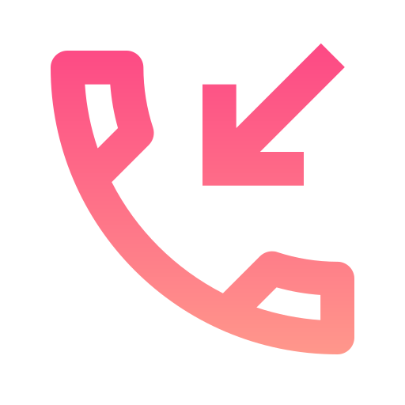

 Mes coordonnées
- Gabriel DE LEPINE--ACKERS
- 18 ans
- Tél. 07 81 94 64 47
- gmail : gabriel.delepine.ackers@gmail.com
 Compétences techniques
Compétences techniques
Aujourd'hui, je suis capable de mettre en place :
- Topologie des réseaux
- En effet, j'ai appris grâce aux travaux pratiques de l'IUT à mettre en place un réseau informatique en configurant des ordinateurs, des switchs et même des routeurs.
-
- Protocoles réseau
- Nous avons étudié des protocoles et configurer le logiciel Wireshark.
- Administration Windows
- J'ai appris à configurer un ordinateur, comme son adresse ip, passerelle par défaut, active directory...
- Virtualisation
- J'ai appris à configuré des machines virtuelles avec VirtualBox.
 Formations
Formations
-
2025 – Baccalauréat Général
- Lycée polyvalent André Argouges - Grenoble
- Spécialité : NSI et Sciences de l’ingénieur
- Option : Maths complémentaires
-
2025-2028 – BUT Réseaux informatiques et Télécommunications
- IUT1 Grenoble
- Spécialité cybersécurité
Je suis un étudiant en Réseaux et Télécommunications à l'université IUT1 de Grenoble qui compte prendre le parcours Cybersécurité en 2ème année.
 Expérience professionnelle
Expérience professionnelle
-
LDLC – Grenoble
- Vente informatique
- Montage / réparation PC
- Gestion des stocks
- Missions :
- Conseiller les clients, comprendre leurs besoins et les accompagner dans leur démarche.
-
- Réparation et montage d’ordinateurs dans le but de les vendre ou les configuré à la demande du client
-
- Gestion des stocks et empaquetage des produits
 Langues
Langues
- Anglais : Bon niveau B2
-
- Pendant les vacances d'été 2025, j'ai fait un séjour linguistique à Cambridge pendant 3 semaines. Je suis parti seul en Anglettaire dans une famille d'accueil. Durant la journée, j'avais cours dans une école pour m'améliorer en anglais, l'après-midi, je pouvais faire des activités en autonomie avec mes amis. Par exemple, nous sommes partis ensemble à Londres pour visiter.
-
- Espagnol : niveau scolaire
 Atouts
Atouts
- Minutieux
- Attentif
- Persévérant
Je suis quelqu'un d'assez perfectionniste. Je prends le temps d'observer mon environnement ainsi que les gens qui m'entourent pour m'adapter le plus efficacement possible en fonction de la situation.
 Centres d'intérêts
Centres d'intérêts
- Badminton :
- J’en fais en club 1 fois par semaine depuis 3 ans et j'adore ça. Le Badminton est mon sport préféré et je suis un bon joueur.
-
- Jeux de société
- Mon père joue beaucoup aux jeux de société et m'y donner goût. Je joue souvent avec lui à des jeux de stratégie.